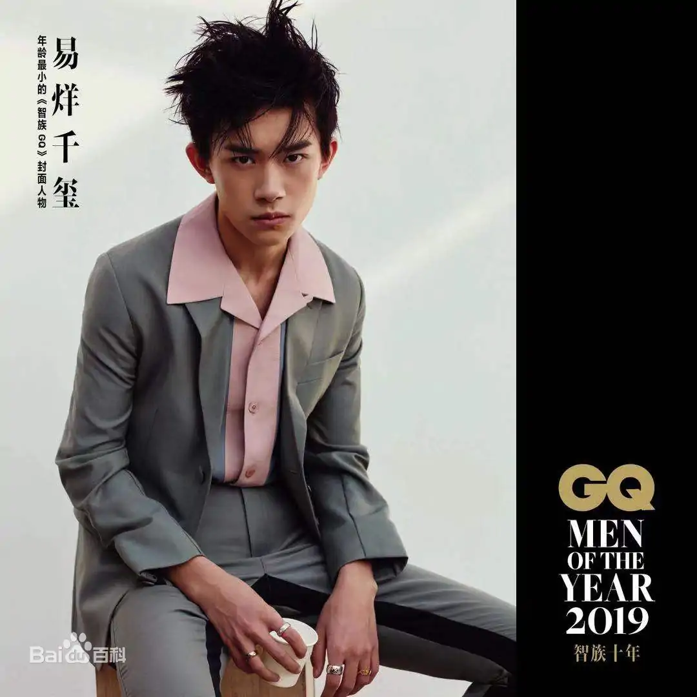

易烊千玺
易烊千玺，2000年11月28日生于湖南省怀化市洪江市，
中国内地男演员、歌手、舞者，演唱组合TFBOYS成员，就读于中央戏剧学院
重要事件
- 2005年，首登电视荧屏 。
- 2009年，加入飞炫少年组合。
- 2013年，加入TFBOYS 。
- 2015年，声演法国动画电影《小王子》男主角 ；自编舞蹈《IF YOU》《RHYTHM TA。
- 2016年，获得第16届音乐风云榜最受欢迎偶像 。
- 2017年，单曲《离骚》获得Billboard Radio China年度华语金曲 ；成立易烊千玺爱心基金 。
- 2018年，出席第60届格莱美奖颁奖典礼 ；担任《这！就是街舞》明星队长，带领其战队夺冠。
- 2019年，主演古装剧《长安十二时辰》，凭借该剧提名中国电视金鹰奖最佳男演员；
成就和荣誉
- 第39届香港电影金像奖最佳男主角（提名）
- 第33届中国电影金鸡奖最佳男主角（提名）
- 第26届香港电影评论学会大奖最佳男演员（提名）
- 第39届香港电影金像奖最佳新演员
- 第35届大众电影百花奖最佳新人奖
- 第14届亚洲电影大奖最佳新演员奖
- 第28届上海影评人奖年度新人男演员
- 第30届中国电视金鹰奖最佳男演员（提名）
- 2020福布斯中国名人榜第1名
- 第19届中国年度新锐榜年度新锐人物
- 2019腾讯娱乐白皮书年度商业价值之星
- 智族GQ十年影响力人物
- 2019爱奇艺尖叫之夜年度男歌手
- 第16届音乐风云榜最受欢迎偶像
- 世界卫生组织中国健康特使
- 丹麦王国首位国家旅游形象代言人
- 2021福布斯中国名人榜第1名
- 第16届华语青年电影周年度新锐男演员奖
- 第26届华鼎奖全国十佳观众最喜爱电视演员奖
- 首届“光影中国”电影荣誉盛典2019年度荣誉推介新人演员
- 第34届中国电影金鸡奖最佳男主角(提名)
主要音乐作品
| 作品 |
年份 |
来源 |
| 海阔天空 |
2022-2-2 |
电影《奇迹·笨小孩》陪伴曲 |
| 雪花 |
2022-1-26 |
《长津湖之水门桥》电影主题曲 |
| 还是笨小孩 |
2022-1-7 |
电影《奇迹·笨小孩》宣传主题曲 |
| 四字歌 |
2021-11-28 |
个人单曲 |
| 一起向未来 |
2021-9-21 |
冬奥主题口号推广歌曲 |
| 未来，请你来！ |
2020-12-21 |
空天歌曲 |
| 1起挺你 |
2020-10-30 |
天猫双11主题曲 |
| 繁星追梦 |
020-10-22 |
王者荣耀梦想主题曲 |
| My Boo |
2020-8-18 |
个人单曲 |
| 粉雾海 |
2020-8-13 |
个人单曲 |
生活照
